মন্দির সম্পর্কে

অটল নিষ্ঠার এক ঐতিহ্য
.
মন্দিরের সময়সূচি
7:00 AM – 12:00 PM
4:00 PM – 9:00 PM
4:00 PM – 9:00 PM
মন্দিরের ঠিকানা
পাঁচলাইশ থানা,চট্টগ্রাম
ভক্তি, শান্তি ও চিরায়ত ঐতিহ্যের এক পবিত্র তীর্থস্থান—আশীর্বাদপ্রার্থী প্রতিটি আত্মার জন্য উন্মুক্ত।
মন্দির পরিদর্শন করুন
.
| রীতিনীতি | সময় | বিবরণ |
|---|---|---|
| মঙ্গল আরতি | 5:00 AM | ভোরবেলা নিবেদিত প্রথম পবিত্র প্রদীপ। |
| প্রাতঃপূজা | 7:30 AM | মন্ত্রোচ্চারণ, পুষ্প ও পবিত্র জল দিয়ে অভিষেকসহ আনুষ্ঠানিক পূজা। |
| ভোগ নিবেদন ও কীর্তন | 12:00 PM | ভগবানের উদ্দেশ্যে প্রস্তুত ও নিবেদিত পবিত্র ভোগ। |
| সন্ধ্যা আরতি | 7:00 PM | কীর্তন সহকারে ভক্তিপূর্ণ প্রদীপ নিবেদন অনুষ্ঠান |
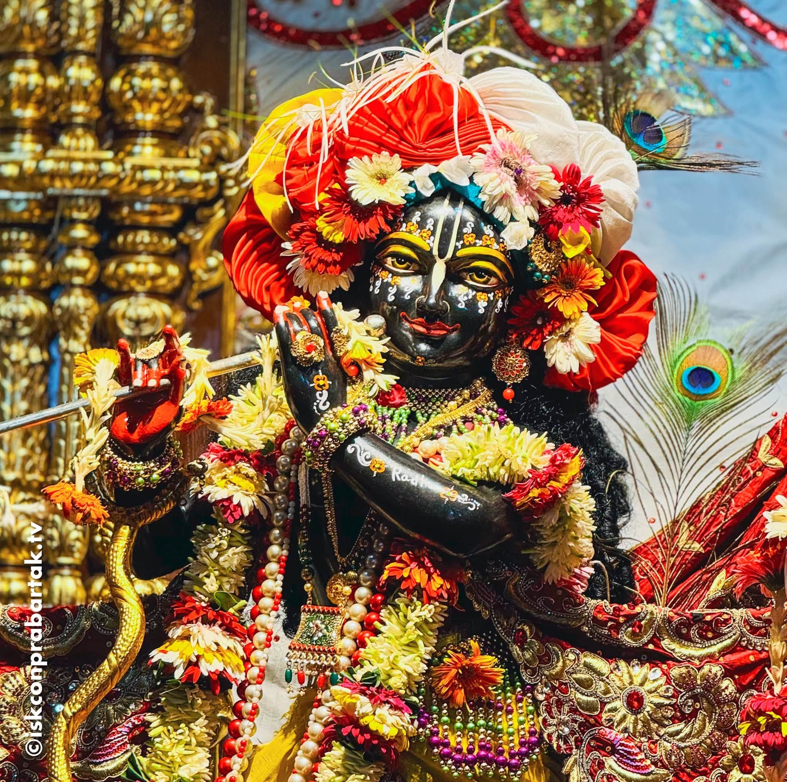
ভক্তিগানের মধ্য দিয়ে ভগবান শ্রীকৃষ্ণের জন্মলগ্ন উদযাপনের মধ্যরাত্রির আয়োজন।
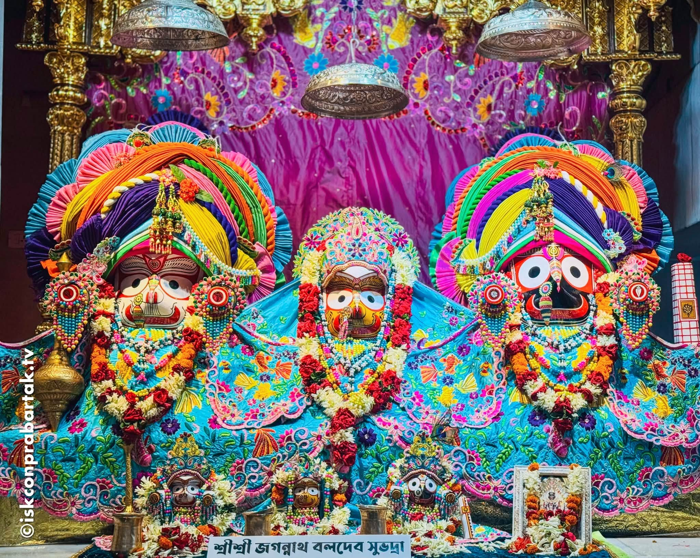
, যা প্রতি বছর আষাঢ় মাসের শুক্লপক্ষের দ্বিতীয়া তিথিতে পালিত হয়। এই উৎসবে ভগবান জগন্নাথ, বলরাম (বলভদ্র) ও দেবী সুভদ্রার মূর্তি রথে বসিয়ে রাস্তায় শোভাযাত্রা সহকারে মাসির বাড়ি বা গুন্ডিচা মন্দিরে নিয়ে যাওয়া হয়।
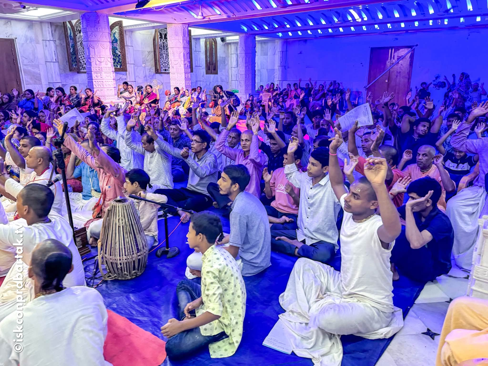
দোলপূর্ণিমা হলো সনাতন ধর্মাবলম্বীদের একটি প্রধান ধর্মীয় ও রঙের উৎসব, যা ফাল্গুন মাসের পূর্ণিমা তিথিতে শ্রীকৃষ্ণ ও রাধার পুণ্য প্রেম এবং মন্দের ওপর ভালোর জয় উদযাপনের জন্য পালিত হয়।
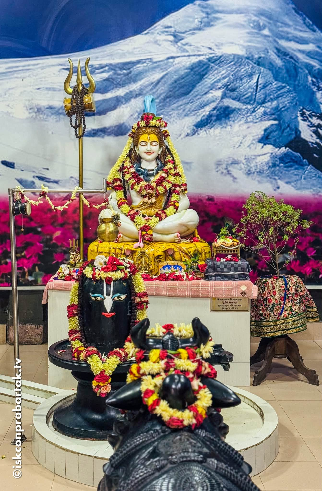
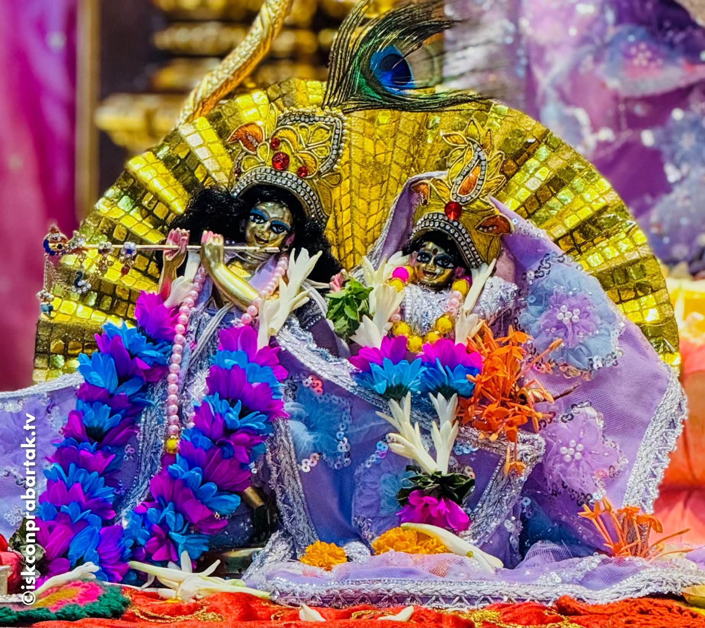
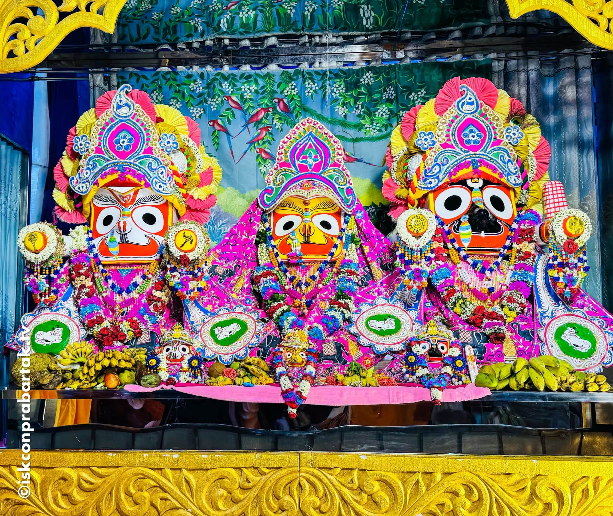
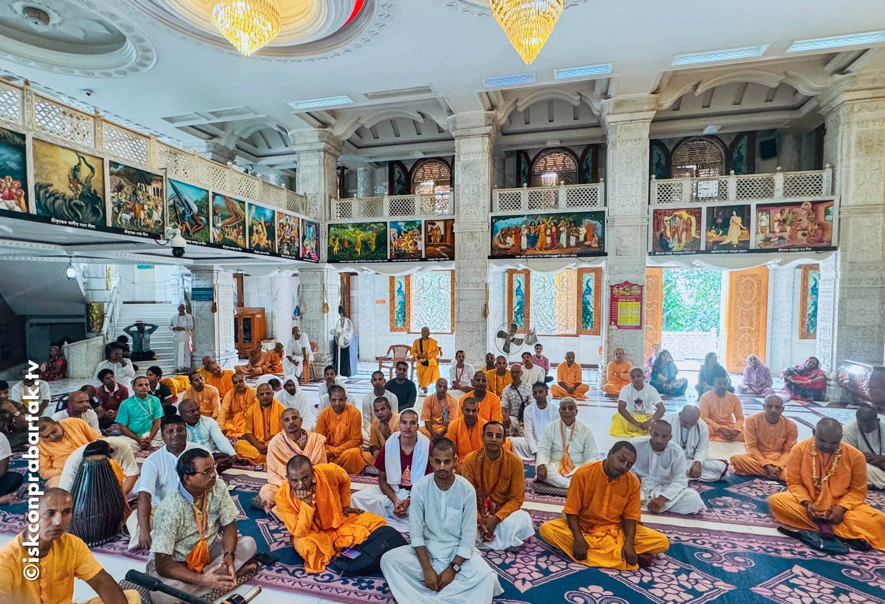
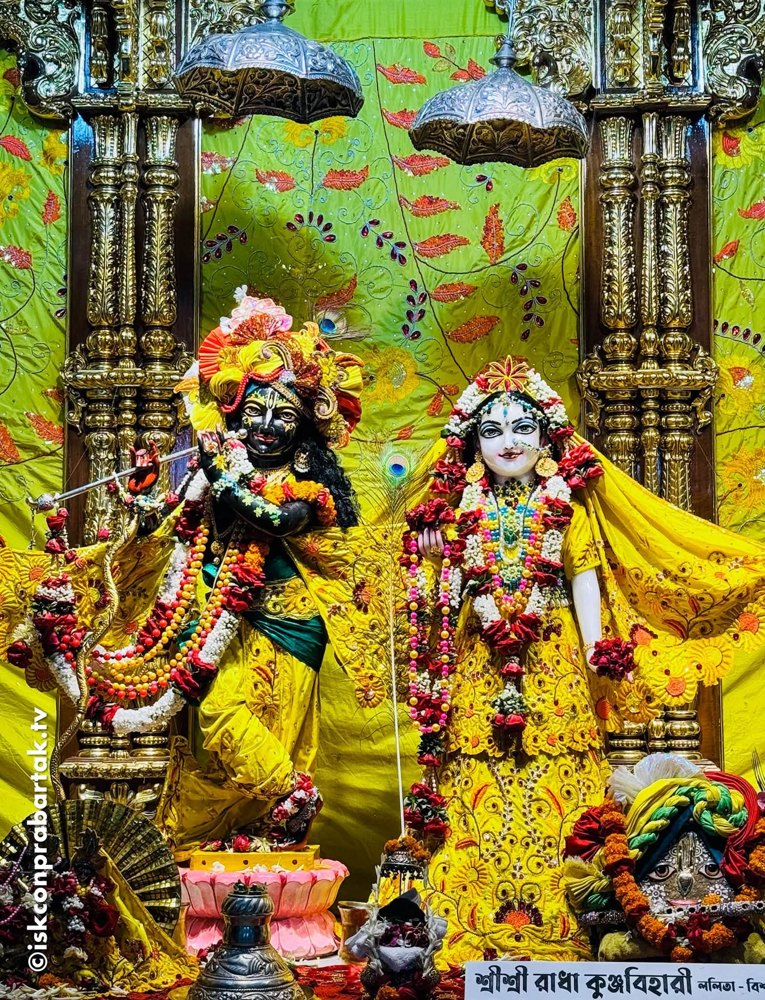
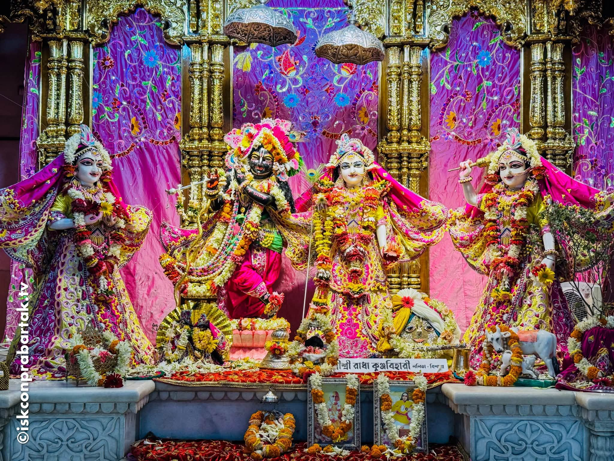
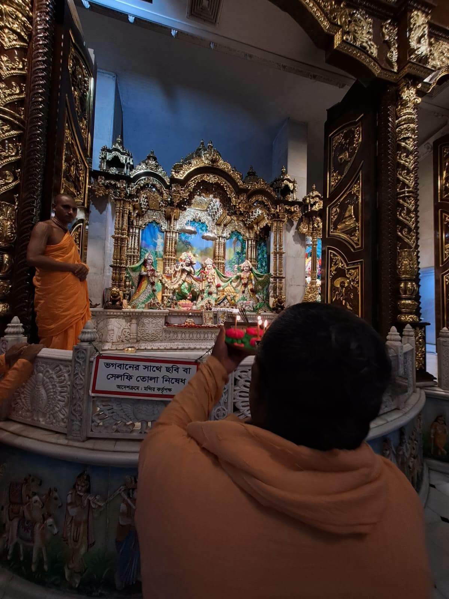
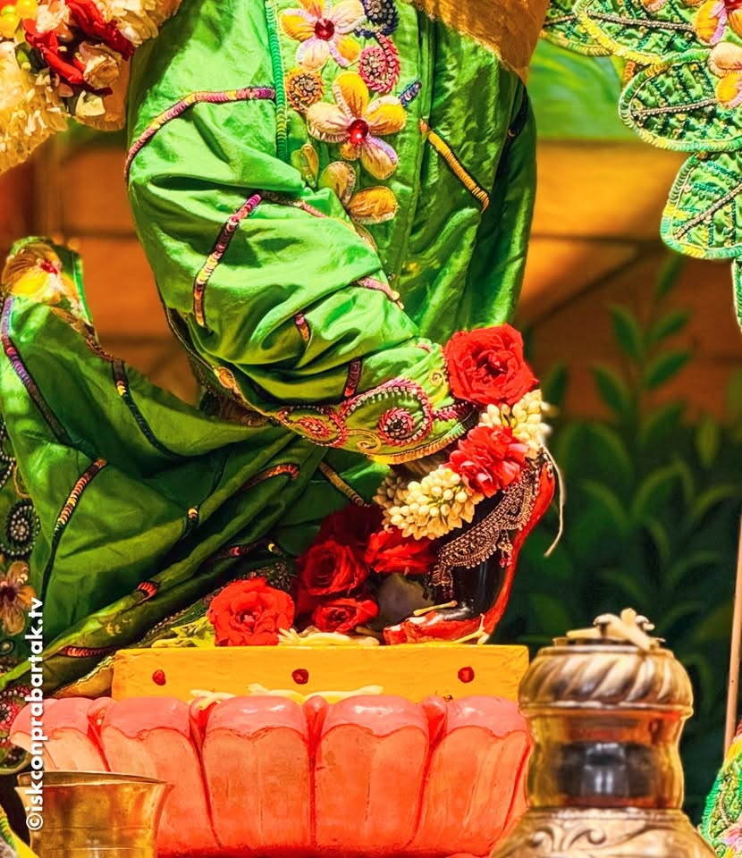
আপনার প্রতিটি অনুদান নিত্য পূজা-অর্চনা, উৎসব-অনুষ্ঠান ও জনসেবামূলক কার্যক্রম পরিচালনায় সহায়তা করে। আপনার এই উদারতা আগামী প্রজন্মের জন্য ভক্তির চিরন্তন শিখাকে প্রজ্বলিত রাখে।
Scan to donate instantly via UPI / mobile banking
ইসকন প্রবর্তক শ্রীকৃষ্ণ মন্দির বাংলাদেশের চট্টগ্রামের একটি হিন্দু মন্দির। যা পাঁচলাইশ থানায় অবস্থিত
+880 1XXX-XXXXXX
iskonprobottok12@gmail.com